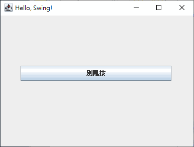
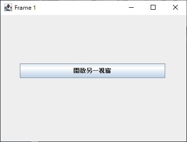
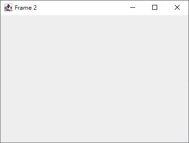

最適合 Java 的 JavaScript 引擎：Rhino
Java SE 6 開始，不但可以讓其他程式語言跑 JVM，像是 PHP、Ruby、Python，並且內建 JavaScript 引擎：Rhino！這是由 Mozilla 以 Java 寫出來的，長年維護下來，功能穩定。
可惜的是，Java SE 8 開始改用 Nashorn 取代，雖然號稱性能更好，但功能不穩定，加上 ECMAScript 6 標準化步調比 Rhino 緩慢，其實沒有比較好用～
Java 11 時宣布放棄 Nashorn，然後在 Java 15 正式汰除 Nashorn，並且不再內建 JavaScript 引擎，於是我們只得回頭下載新版的 Rhino 來用。幸好這才是原本真正該走的路，與 Java 整合得更好的 Rhino，一向是最適合 Java 的 JavaScript 引擎！
所謂 Nashorn 性能較佳，坦白說其實一樣差，比性能只是在比爛而已。但 Rhino 與 Java 高度整合的功能穩定性，能讓你毫無障礙、隨心所欲地用 JavaScript 語言存取 Java API，這才是 JavaScript 的重點！如果是為了性能，那應該繼續用 Java 語言寫程式才對，之所以用 JavaScript 語言，是為了比 Java 語言寫得更快不是嗎？因此當然是功能穩定沒什麼問題的 Rhino，要比性能較好但問題較多的 Nashorn，更適合做為 Java 的 JavaScript 引擎！
目錄
程式的執行
．在 Java 寫 JavaScript 程式
．從 Java 傳資料給 JavaScript 程式
．在 Java 載入 *.js 檔案
．直接用 JDK 執行 *.js 檔
．Interactive mode
．掛載新版 Rhino 引擎（推薦）
．如何取得 Java 內建 JavaScript 引擎的版本
語言的相容
．在 JavaScript 使用 Java API
．調用 JNI 的外部 SDK
．在 JavaScript 使用 Java 的資料型態
．覆載物件方法與實作介面功能
．多執行緒
．在 *.js 中載入其它 *.js
．最頂層物件
．列出 JavaScript 物件的屬性和方法
．Rhino 內建屬性和函式
．其它 Rhino 的不標準語法
功能的應用
．Swing 視窗程式設計
．播放 WAVE 和 MP3 音樂
．播放 MIDI 音樂
．壓縮與解壓縮 ZIP 檔案
．使用 SQLite 資料庫
．簡易 HTTP 伺服器
其他
．附錄
．JavaScript reference
．Standard built-in objects
．RingoJS
在 Java 寫 JavaScript 程式
在 org.mozilla.javascript 套件底下，有各式類別可以組成 JavaScript，進行更細部的設計。
從 Java 傳資料給 JavaScript 程式
寫在全域範疇
寫在區域範疇（避免汙染最頂層物件）
在 Java 載入 *.js 檔案
script.js
Main.java
直接用 JDK 執行 *.js 檔
Java 提供 jrunscript.exe 程式，有 JavaScript 直譯器的功能！
script.js
命令提示字元
Interactive mode
執行 jrunscript.exe 時不加參數，會進入 interactive mode，一個能用 JavaScript 語言操作系統的環境：
掛載新版 Rhino 引擎
雖然 Java 不再內建 JavaScript 引擎，但 Mozilla 一直都在維護 Rhino 專案，放在 GitHub 開放下載：
http://github.com/mozilla/rhino/releases
1.7.8 版開始，必須 Java SE 8 以上才能使用，所以 Java SE 7 最多只能下載 1.7.7.2 版來用。
直譯 *.js 檔
用 java.exe 來執行，會比 jrunscript.exe 少很多問題，建議使用！
不過，用 -jar 的話，CLASSPATH 就只限於 JAR 檔案包內，這樣 Rhino 的 Packages 物件無法找到其它位置的類別。若需要在 JavaScript 搭配 *.class 跑 Java 程式，應該用 -cp 參數來使用 Rhino 的 JAR，像這樣：
另外，*.js 原始碼檔案使用不含 BOM 的 UTF-8 字元編碼的話，在 Windows 會遇到亂碼的問題。這時要下 -encoding UTF-8 參數給 org.mozilla.javascript.tools.shell.Main 或 rhino.jar，也可以下 -Dfile.encoding=UTF-8 參數給 java.exe。
其他常用的參數如下：
| -e 檔案 | 執行 *.js 檔案。 |
| -f 檔案 | 讀取純文字文件，並嘗試執行裡面的內容，類似 eval(String)。 |
| -opt -1 到 9 | 設定編譯的最佳化程度，0 表示關閉最佳化，編譯速度最快，程式品質最差。依次從 1 到 9 提升最佳化程度。還可設定為 -1 表示直譯就好，不用編譯。 |
| -strict | 開啟 ECMAScript 5 的嚴格模式。 |
| -version 版號 | 指定 SpiderMonkey 版號，有 100、110、120、130、140、150、160、170、180、200 可設定。 130 對應 ECMAScript 2，150 對應 ECMAScript 3，180 對應 ECMAScript 5，200 對應 ECMAScript 6。 由於 Rhino 的 ECMAScript 6 實作進度未達標，所以預設值並非最高的 200。以撰稿時最新的 Rhino 1.7.13 來講，還不支援預設參數、不定參數、字串插值。但像是 for.. of..、function*、yield、Set、Map 有在實作了，只是還沒完工，要使用再設為 200。 |
| -help | 查閱更多參數。 |
編譯 *.js 為 *.class
雖然 Java SE 6 內建 Rhino 引擎，但只打包部分功能，並未提供所有功能。所以，要將 *.js 編譯成 *.class，得自行下載 Rhino，才有 org.mozilla.javascript.tools.jsc 可用：
編譯出來的 *.class 是 Rhino 的 NativeFunction 物件，需符合 Scriptable 才能動，所以只用 java.exe 無法執行，得搭配 Rhino 的 JAR：
使用新版 Rhino 在 Java 內嵌 JavaScript 程式
因為 Java SE 6 和 Java SE 7 已經內建 Rhino，所以這比較適合內建 Nashorn 的 Java SE 8 使用，甚至兩種都沒內建的 Java SE 15 使用。
純粹只是調用 Rhino 的 API 在 Java 產生 JavaScript 程式功能而已，新舊版本變化不大，沒發現問題的話，其實用內建的就夠了～
如何取得 Java 內建 JavaScript 引擎的版本
在 JavaScript 使用 Java API
用 importPackage() 可以載入套件，就像 import java.util.* 一樣。要注意的是，JavaScript 並未預設載入任何套件，所以就算是 java.lang.* 的類別也要自己載入。
只想載入某個類別的話，用 importClass()。
不過，透過引擎寫 JavaScript 程式，調用類別通常是直接寫完整名稱，例如：let a = new java.util.ArrayList()，比較符合 ECMAScript 標準，而不是呼叫 Rhino 獨有的 importPackage()。符合標準的好處是，往後要移植到其它地方執行會比較容易，例如從 Rhino 移植到 JScript .NET。
另外，不像 JScript .NET 沒辦法使用 C# 中設計為泛型的類別，Java 的泛型只是語法糖，所以不支援泛型的 JavaScript 在調用 Java API 中用到泛型的類別，反而沒有相容性問題，就像本來就是 Object 一樣。
還有，遇到 setXXX() 和 getXXX() 之類的方法，在 Rhino 可以寫成 .xxx，例如 frame.setTitle('Hello!') 可以寫成 frame.title = 'Hello'。
調用 JNI 的外部 SDK
以「羅技 G 系列開發者實驗室」開放下載的「LED 照明 SDK」為例：
在 JavaScript 使用 Java 的資料型態
除了 Java 的基本資料型態，在調用 Java API 需要傳入的參數是類別時，盡量把傳入的變數宣告為 Java 的物件，而不是宣告 JavaScript 的物件傳入。例如需要傳入一個 ArrayList，就 let a = new ArrayList() 來用，既簡單、又省事，不要宣告 let a = [] 再想方設法丟進去，不但經常要浪費時間處理自動轉型的問題，程式跑起來性能也不理想。
其實，就像東西買回來要用之前先好好看一下說明書一樣，建議寫 Rhino 程式調用 Java API 裡面的東西時，養成先查閱 Java API Specification 的習慣，看有沒有傳回值？需要傳入哪些物件？掌握好一切，好好去張羅，這樣去使用會更順利！
查閱 Java API Specification、了解總共需要用到哪些物件、一個個宣告出來用…這雖然需要花費時間，但往往比直接寫 JavaScript 程式碼去碰運氣還要快。碰運氣看 JavaScript 的 Array、String、Number、Objuet 能不能丟進去用，不能時就轉型來轉型去，以我過來人的經驗，這樣反而更花時間，更別說這樣的程式性能會很糟糕。
對於 JavaScript 和 Java 兩邊自動轉型的原則是：「盡量讓 Java 物件轉為 JavaScript 物件，這點 Rhino 做得很出色。但盡量不要讓 JavaScript 物件轉 Java 物件，這部分 Rhino 跑得很慢，而且很多意想不到的狀況。」
覆載物件方法與實作介面功能
以覆載 Thread 物件的 run() 方法為例
以實作 Runnable 介面的 run() 功能為例
基於 Lambda 的特性，介面只有一個功能需要實作的話，可以省略介面名稱：
多執行緒
假設有個播放音樂的函式，我們不想等音樂播完再執行後面的程式，而是一邊播放一邊執行其它的程式，這時就要寫多執行緒！
用 Java API 的 Thread 物件
用 Rhino 內建函式 spawn()
補充
像 playMusic 這樣用來撥放背景音樂的函式，當初就該設計成獨立的執行緒，比較方便使用：
Thread.run()
spawn()
在 *.js 中載入其它 *.js
load('檔名.js')
最頂層物件
網頁瀏覽器的最頂層物件是 window，而 Rhino 則是 global。
既然最頂層物件不同，那能呼叫的內建函式[1] 也不盡相同，例如不會有 setTimeout() 可用。
內建函式能否執行，要看執行的環境。在 interactive mode 所有功能都用，而用直譯器執行 *.js 的做法，有些功能無法作用，例如 readline()。
其實只要 Java API 能做到的，還是盡量用 API 去完成，往往會比用內建函式省事～
列出 JavaScript 物件的屬性和方法
Rhino 所有內建函式都在 global 裡，因此可用這個程式列出來看。
要看 API 文件的詳細說明，可查 org.mozilla.javascript.tools.shell.Global 類別。
Rhino 內建屬性和函式
arguments
environment
history
help()
defineClass(Packages.className)
deserialize(fileName)
gc()
load([*.js, ...])
loadClass(Packages.className)
print([expr ...])
readFile(path [, characterCoding])
readUrl(url [, characterCoding])
runCommand(commandName, [arg, ...] [options])
seal(object)
serialize(object, fileName)
spawn(function or script)
sync(function)
quit()
version([number])
arguments
這不是函式物件的 arguments，而是 global 物件的，用來取得傳給命令列的參數。
範例：
如果想拖曳檔案給 JavaScript 程式使用，可以在執行 *.js 的批次檔用 %1 到 %9 當作參數：
再把檔案拖曳到批次檔即可。
history
紀錄 Shell 輸入過的指令。
defineClass()
用來載入繼承自 ScriptableObject 的 Java 類別。
這種類別更符合 JavaScript 物件的特性，能用 JavaScript 的語法糖操作 Java 物件。
但無法用「new Packages.類別名稱()」建立，必須用「defineClass(Packages.類別名稱)」掛載進來。
Sample.java
main.js
loadClass()
用來執行實作 Script 介面的類別。
它並不是載入類別來用，而是直接執行寫在 exec() 裡面的程式。
當 JavaScript 無法正常使用 Java API 的功能，不得不用 Java 設計成 *.class 來調用時，這機制是最佳選擇！
Sample.java
main.js
其它 Rhino 的不標準語法
var 在全域範疇的影響
Rhino 將變數放在全域物件的 prototype，這設計或多或少降低 var 對全域的汙染。但別忘了！var 的其它容錯特性還是會帶來副作用，正確的使用 let 還是很重要。
let 和 const 的實作並不標準
Rhino 的 let 和 const 並未完全實作 ECMAScript 6 規範的功能，所以全面改用 let 和 const 取代 var 的話，要注意與其它 JavaScript 引擎表現起來不盡相同的問題！
可以把 let 用在 for() 的計數器和流程控制的 {} 裡面就好，用在其它場合的話，不要指望它能和網頁瀏覽器的 let 一樣，完全解決 var 的弊端：「因為 Rhino 的 let 像是拿 var 改出來湊用的，在全域範疇使用，依然會將變數放入 global 物件。」而 const 也有問題，資料修改了並不會報錯，只是改了也沒用而已：「var 出來的變數重複宣告不會報錯就得被嘴，const 出來的常數重複賦值不會報錯不是一樣嗎？」
由於 Rhino 將 var 對全域的汙染限縮在 global.prototype 裡，因此不見得要全面用 let 和 const 取代 var，可以在 var 會出問題的地方使用就好。
當然，在 Rhino 全面改用 let 取代 var 並不會有問題，反而是最理想的做法！問題只在 Rhino 的 let 跟 ECMAScript 規範的 let 不太一樣，所以你在網頁瀏覽器全面改用 let 所解決的問題，可能在 Rhino 不會發生效用，導致未如預期的情況發生而已。把網頁瀏覽器的 JavaScript 程式碼拿到 Rhino 用時，記得資料都測試一下，就沒問題了～
function 物件裡面只有一行敘述的話，可以省略 {} 括號
Swing 視窗程式設計
視窗、按鈕、事件

呼叫另一個視窗


播放 WAVE 和 MP3 音樂
這個程式可以播放 WAVE 格式音樂，同樣的程式只要到：
http://sourceforge.net/projects/mp3pl/files/lib/
下載 jl1.0.1.jar、mp3spi1.9.5.jar、tritonus_share-0.3.6.jar 三個套件，用 -cp 參數掛載進去：
就具備播放 MP3 格式的能力了！不用修改程式碼。
播放 MIDI 音樂
壓縮與解壓縮 ZIP 檔案
壓縮
底下程式示範將 archive 資料夾壓縮為 archive.zip：
解壓縮
使用 SQLite 資料庫
請到 http://repo1.maven.org/maven2/org/xerial/sqlite-jdbc/ 下載 SQLite JDBC，然後用 -cp 參數掛載，就能像如下程式使用 SQL 存取資料：
簡易 HTTP 伺服器
附錄
用 Rhino 搭建輕量級 Java 程式環境
由於只需 java.exe 就能直譯和編譯 JavaScript 程式，不需用到 javac.exe，因此 JRE + Rhino 的組合可以取代笨重的 JDK！
不想用 Java 語言寫程式、也不想用 Kotlin，不妨試試 Rhino！
JavaScript 程式設計錦囊
Value object
Higher-order function
Destructuring assignment
Top-level functions
善用以下函式：
eval(string)
parseInt(string [,radix])
parseFloat(string)
isFinite(value)
encodeURI(string)
decodeURI(string)
encodeURIComponent(string)
decodeURIComponent(string)
建議用 Number.isNaN() 取代 isNaN()。
建議用 String.charOcdeAt() 取代 escape()。
建議用 String.fromCharCode() 取代 unescape()。
Array.prototype.join() 和 String.prototype.split() 的妙用
自製格式化字串
寫成函式
如上範例結果所示，沒有對應的參數時顯示 {1} 和 {2}。若不喜歡這樣的設計，可以刪掉 || match，這樣沒有對應的參數時，會顯示 undefined。
寫在 String 物件
執行 GUI 程式時的命令提示字元視窗
用直譯器執行 *.js 程式檔，必然會伴隨一個命令提示字元的視窗，對視窗應用程式來說相當礙眼。
Launcher
可以自己寫個 launcher.jar 來跑 *.js：
20061211A_01.7z
解開後，用滑鼠點兩下 launcher.jar，會執行 main.js 裡面寫的 Swing 視窗程式，而不會跳出命令提示字元視窗。
在 launcher.bat 可以修改程式啟動的指令。
想修改或了解 launcher.jar，請自行研究 src 資料夾裡的 Launcher.java。
仰賴 Java 的 Executable JAR 不見得是理想的解決方案，不妨用 C 語言或 C# 語言，自己比照下載的範例，做一個 launcher.exe 來執行。
Executable JAR
將 *.js 編譯成 *.class，再打包成 Executable JAR，也是一種解決的辦法！
做法與範例
詳情請下載範例：20061211A_02.7z，看看 build.bat 是怎麼編譯和打包的。
為了減少錯誤，本範例內含 rhino-1.7.13.jar，只要能呼叫 java.exe，build.bat 就能正確執行才對！
另外，JRE 沒有 jar.exe 可以打包 JAR 檔，JDK 才有，所以這範例另外用 Java API 的 java.util.jar 套件，寫了一個打包的程式：jar.js，好讓 JRE + Rhino 的輕量開發環境更可行！
但 jar.js 不是這一節的重點，不需要去研究！建議另外改用 7z.exe、jar.exe、zip4j、甚至 Windows 內建的「傳送到 → 壓縮的 (zipped) 資料夾」就好～
不支援 Executable JAR 怎麼辦
如果你的作業系統不支援 Executable JAR 的能力，可以用 *.msi 檔來安裝 Java，會自動設定好這功能。
只想用 *.zip 版，以免被寫入一堆垃圾參數的話，就自己寫個 setup.reg 吧：
請視你 Java 安裝的位置修改內容…最後落落長那個，不妨另外執行 regedit.exe 再修改。
字元編碼問題
使用 Executable JAR 有個問題，就是無法在 MANIFEST.MF 設定 encoding 參數，所以在預設為 ASCII 字元編碼的 Windows，使用 UTF-8 的檔案會亂碼。
解決辦法：
1) 原始碼的字元編碼改用 Big5 或 UTF-16！尤其 UTF-16 是 Java 和 JavaScript 預設使用的字元編碼，不需要 -Dfile.encoding 就能混用多國文字，是想避開字元編碼問題最佳的選擇！
2) 就是想用 UTF-8 字元編碼的話，可在程式碼寫：
java.lang.System.setProperty('file.encoding','UTF-8');
再把視窗程式寫在其它的 *.js 用 load() 載入。
必須在 load() 之前就執行這程式，否則載進來的程式還是亂碼。
在批次檔用 ECHO 產生 MANIFEST.MF
通常要打包 JAR 的專案，會事先備好 META-INF 資料夾和 MANIFEST.MF 檔案，再跟 *.class 一起壓縮進去。
如果不想事先備好的話，可以用 ECHO 產生 MANIFEST.MF：
用 7z.exe 打包 JAR
安裝 7-Zip 的人蠻多的[2]，所以這裡示範一下用 7z.exe 打包 JAR 的方式：
不建議用 PowerShell 打包 JAR
其實 Windows 10 的 PowerShell 就可以壓縮 ZIP 格式的檔案，但無法成為有效的 Executable JAR：
在 Windows 作業系統壓出來的 ZIP 檔案，資料夾路徑經常用的符號是 \，而 Executable JAR 必須是 / 符號。
用 PowerShell 壓的 ZIP 檔案，就是以 META-INF\MANIFEST.MF 紀錄檔案路徑，只要改成 META-INF/MANIFEST.MF 就能執行了…不過沒人吃飽太閒，專程用十六進位編輯器進去改吧？[3]